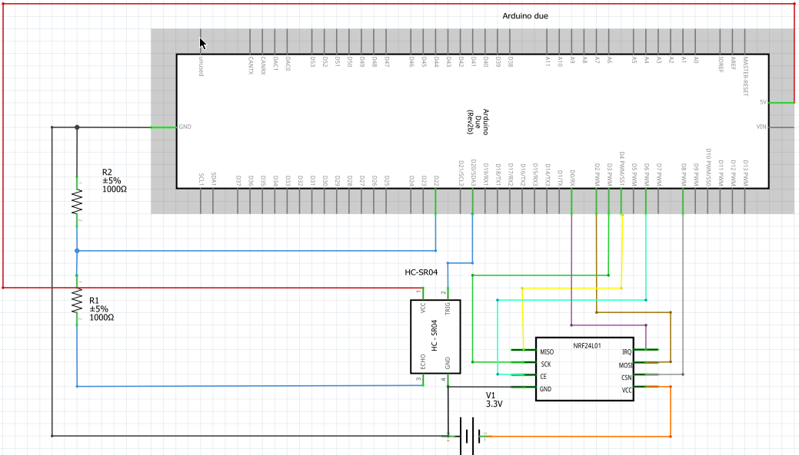
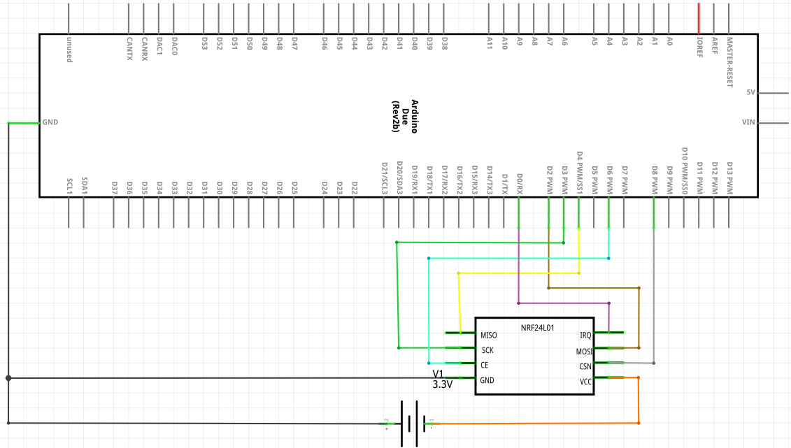
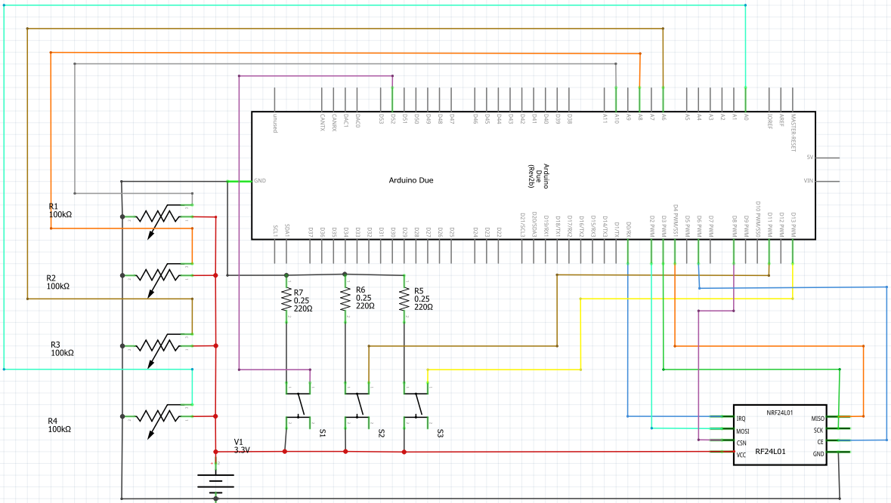
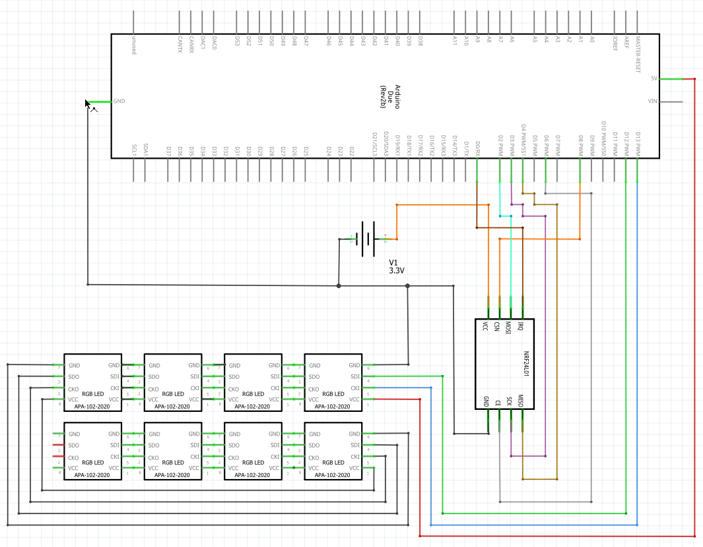

This page contains multiple examples and their explanation, circuit schematic Those example are:
Example 1: HC-SR04
This file is an example to which is used to Transmit and recieve the distance measured by a HC-SR04
This example concists of 2 parts:
- The first part is the main_tx()-function is an example which: Measures the data HC-SR04
- The second part is the main_rx()-function is an example which: Retrieves the data and sends it to the console In the circuitschema the 3.3V-pin is displayed as a external powersource because of a mistake in the Arduino Due scheme in Fritzing
Transmit circuit schematic

Recieve circuit schematic

Transmit code example
std::array <uint8_t, 4> send_distance(SR04 &sensor){
std::array <uint8_t, 4> data = {};
float distance = sensor.get_distance();
int distance_m = distance;
int distance_cm = (distance - distance_m)*100;
data[0]=(distance_m>>8);
data[1]=(distance_m&0xff);
data[2]=(distance_cm>>8);
data[3]=(distance_cm&0xff);
return data;
}
int main(){
WDT->WDT_MR = WDT_MR_WDDIS;
auto IRQ = hwlib::target::pin_in(hwlib::target::pins::d0);
auto clk = hwlib::target::pin_out(hwlib::target::pins::d3);
auto mosi = hwlib::target::pin_out(hwlib::target::pins::d2);
auto miso = hwlib::target::pin_in(hwlib::target::pins::d4);
auto RX_TX = hwlib::target::pin_out(hwlib::target::pins::d6);
auto minion_select = hwlib::target::pin_out(hwlib::target::pins::d8);
auto spi_bus = hwlib::spi_bus_bit_banged_sclk_mosi_miso(clk, mosi, miso);
const std::array<uint8_t, 5> address = {0xe7, 0xe7, 0xe7, 0xe7, 0xe7};
IPASS::RF24L01 chip(spi_bus, RX_TX, minion_select, IRQ, address, address, 0x11,
false);
auto trigger = hwlib::target::pin_out(hwlib::target::pins::d20);
auto echo = hwlib::target::pin_in(hwlib::target::pins::d22);
auto distance_sensor = SR04(trigger, echo);
std::array<uint8_t, 4> data = send_distance(distance_sensor, chip);
for(;;){
chip.write_tx(data);
chip.send_packages();
hwlib::wait_ms(250);
}
}
Class for the RF24L01.
Definition: RF24L01.hpp:32
Recieve code example
float decode_distance(const std::array <uint8_t, 4> &data){
int distance_m = data[0]<<8|data[1];
int distance_cm = data[2]<<8|data[3];
return (distance_m+distance_cm/100);
}
int main_rx() {
WDT->WDT_MR = WDT_MR_WDDIS;
auto IRQ = hwlib::target::pin_in(hwlib::target::pins::d0);
auto clk = hwlib::target::pin_out(hwlib::target::pins::d3);
auto mosi = hwlib::target::pin_out(hwlib::target::pins::d2);
auto miso = hwlib::target::pin_in(hwlib::target::pins::d4);
auto CE = hwlib::target::pin_out(hwlib::target::pins::d6);
auto minion_select = hwlib::target::pin_out(hwlib::target::pins::d8);
auto spi_bus = hwlib::spi_bus_bit_banged_sclk_mosi_miso(clk, mosi, miso);
const std::array<uint8_t, 5> address = {0xe7, 0xe7, 0xe7, 0xe7, 0xe7};
IPASS::RF24L01 chip(spi_bus, CE, minion_select, IRQ, address, address, 0x11,
false);
chip.change_RX_PW_P(0, 4);
hwlib::wait_ms(200);
chip.start_RX();
std::array<uint8_t, 4> data_in = {0x00, 0x00, 0x00, 0x00};
for (;;) {
if (chip.packet_recieved()) {
chip.read_rx(data_in);
hwlib::cout << "distance: " << decode_distance(data_in) << " meter" <<'\n';
}
hwlib::wait_ms(1000);
}
}
static Setting RF_DR
static Settings that contains the Register_name and the bitmask of the RF_DR-setting
Definition: RF24L01.hpp:581
Example 2: APA102
This file is an example to which is used to Transmit and recieve RGB and brightness data from 4 Potentiometers
This example concists of 2 parts:
- The first part is the main_tx()-function is an example which: checks if one of the buttons is pressed
- if the first button connected to D52 is pressed: Measures the data from the potentiometers and sends it
- if the second button connected to D11 is pressed: Send {0,0,0,0,0} to turn of the leds
- if the third button connected to D13 is pressed: Send {0,0,0,0,255} to turn on the random_colors function off the APA102-library which sends pseudo-random values to the apa102
- The second part is the main_rx()-function is an example which: Retrieves the data and sends it to the APA102 In the circuitschema the 3.3V-pin is displayed as a external powersource because of a mistake in the Arduino Due scheme in Fritzing
Transmit circuit schematic

Recieve circuit schematic

Transmit code example
int main() {
WDT->WDT_MR = WDT_MR_WDDIS;
auto IRQ = hwlib::target::pin_in(hwlib::target::pins::d0);
auto clk = hwlib::target::pin_out(hwlib::target::pins::d3);
auto mosi = hwlib::target::pin_out(hwlib::target::pins::d2);
auto miso = hwlib::target::pin_in(hwlib::target::pins::d4);
auto RX_TX = hwlib::target::pin_out(hwlib::target::pins::d6);
auto minion_select = hwlib::target::pin_out(hwlib::target::pins::d8);
auto spi_bus = hwlib::spi_bus_bit_banged_sclk_mosi_miso(clk, mosi, miso);
auto red = hwlib::target::pin_adc(hwlib::target::ad_pins::a0);
auto green = hwlib::target::pin_adc(hwlib::target::ad_pins::a6);
auto blue = hwlib::target::pin_adc(hwlib::target::ad_pins::a8);
auto brightness = hwlib::target::pin_adc(hwlib::target::ad_pins::a10);
auto Send_value_button = hwlib::target::pin_in(hwlib::target::pins::d52);
auto Turn_off_button = hwlib::target::pin_in(hwlib::target::pins::d11);
auto Random_color_button = hwlib::target::pin_in(hwlib::target::pins::d13);
const std::array<uint8_t, 5> address = {0xe7, 0xe7, 0xe7, 0xe7, 0xe7};
IPASS::RF24L01 chip(spi_bus, RX_TX, minion_select, IRQ, address, address, 0x11,
false);
std::array<uint8_t, 5> data={};
for(;;) {
if(Send_value_button.read()){
data[0]=red.read();
data[1]=green.read();
data[2]=blue.read();
data[3]=brightness.read();
data[4]=0x00;
chip.write_tx(data);
chip.send_packages();
while(Send_value_button.read()){
hwlib::wait_us(1);
};
}
if(Turn_off_button.read()){
data = {0x00,0x00,0x00,0x00, 0x00};
chip.write_tx(data);
chip.send_packages();
while(Turn_off_button.read()){
hwlib::wait_us(1);
}
}
if(Random_color_button.read()){
data = {0x00, 0x00, 0x00, 0x00, 0xff};
chip.write_tx(data);
chip.send_packages();
while(Random_color_button.read()){
hwlib::wait_us(1);
}
}
}
}
Recieve code example
int main() {
WDT->WDT_MR = WDT_MR_WDDIS;
auto IRQ = hwlib::target::pin_in(hwlib::target::pins::d0);
auto clk = hwlib::target::pin_out(hwlib::target::pins::d3);
auto mosi = hwlib::target::pin_out(hwlib::target::pins::d2);
auto miso = hwlib::target::pin_in(hwlib::target::pins::d4);
auto RX_TX = hwlib::target::pin_out(hwlib::target::pins::d6);
auto minion_select = hwlib::target::pin_out(hwlib::target::pins::d8);
auto led = hwlib::target::pin_out(hwlib::target::pins::d13);
auto spi_bus = hwlib::spi_bus_bit_banged_sclk_mosi_miso(clk, mosi, miso);
auto clk2 = hwlib::target::pin_out(hwlib::target::pins::d10);
auto mosi2 = hwlib::target::pin_out(hwlib::target::pins::d12);
auto spi_bus2 = hwlib::spi_bus_bit_banged_sclk_mosi_miso(clk2, mosi2, hwlib::pin_in_dummy);
const std::array<uint8_t, 5> address = {0xe7, 0xe7, 0xe7, 0xe7, 0xe7};
IPASS::RF24L01 chip(spi_bus, RX_TX, minion_select, IRQ, address, address, 0x11,
false);
chip.change_RX_PW_P(0, 5);
hwlib::wait_ms(200);
chip.start_RX();
std::array<uint8_t, 5> data_in = {0x00, 0x00, 0x00, 0x00};
bool random_color = false;
uint8_t counter = 0;
for (;;) {
if (chip.packet_recieved()) {
led.write(1);
chip.read_rx(data_in);
if(data_in[4] == 0xff){
random_color=true;
}
else {
random_color = false;
counter=0;
ledstrip.write({data_in[0], data_in[1], data_in[2]}, data_in[3]);
}
}
if(random_color){
if(counter%7==0){
ledstrip.random_colors();
}
counter++;
}
hwlib::wait_ms(100);
}
}
limited OO class to control APA102 LED strip
Definition: APA102.hpp:20